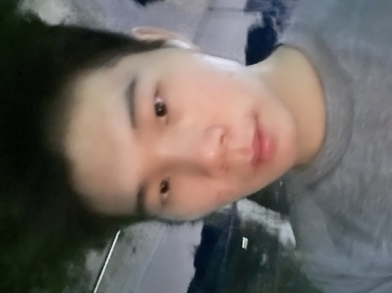

基本信息
请上传一张自己的照片，普通的生活照就可以！（只是为了面试的时候我们可以把你认出来）

查看原图
查看原图
通用问题部分
为什么想要加入CSSA？
当我最初面对未知的一切时，是CSSA的新生手册和新生会等一系列活动给了我第一份安稳和方向感。我认识一位在CSSA里的学长，从他那里，我听到的不是光环，而是成员间互相支持的融洽氛围和组织的热情。这使我相信CSSA是一个能让人成长、传递温暖的地方。我希望能加入进来，成为一个能为后来者提供帮助和指引的人。
你心目中CSSA是个什么样的组织？
在我心中，康奈尔CSSA的核心是一个充满关怀与支持的服务型组织。这份关怀体现在详尽的新生手册和贴心的接机服务中，它将我们初来乍到的不安，化为踏实的归属感。此外CSSA举办的各类活动不仅是娱乐，也是其服务精神的延伸——为大家创造一个可以互相帮助、共同成长的社区。
加入CSSA之后，你最想在康奈尔校园内实现的事情是什么？
在现有的大型分享会之外，我希望为大家提供一个长期稳定的小组环境，进行更具针对性的求职实战准备。以解决个人求职时练习机会少、缺少反馈的问题。
大概行动是：按求职方向将同学们分组。之后推动小组定期进行简历互改、模拟面试和行业信息交流。由CSSA利用资源邀请相关行业的学长学姐，为小组提供阶段性的指导。
秘书处
如果让你选择未来一周的工作，你想做什么？
写一封让新生感到温暖的欢迎邮件
当别人第一次见到你时，他们会说“哇，你居然___！”（请填空）
眼睛这么小
某天深夜，一位新生在微信上非常焦急地询问：‘我的航班延误了了，接机联系不上怎么办？现在半夜一个人在机场好害怕...’
作为小助手值班的你，会如何回复？请写出具体回应（注意：你无法直接解决问题，但需要让TA感到安心）。
同学你好，我是CSSA的小助手，我看到你的消息了，你先别急，有我在。 首先，也是最重要的，请你先确保自己的安全。现在就找一个机场里有工作人员、灯光明亮的地方待着，比如航空公司的服务台或者机场的问询处附近，好吗？接机那边应该是信息没同步上错过了，这个没关系，我们有Plan B。从机场到学校还有其他很安全的方式。等你安顿好了，我们可以一起看看是打车还是坐机场大巴（shuttle）更方便，我可以一步步告诉你去哪里坐车、大概多少钱、怎么和司机说地址。 总之，现在最重要的是你的安全。你先去我说的安全地方，然后告诉我你那边的情况。我会一直在线陪着你，直到你顺利到达宿舍为止。放心吧。
你希望从秘书处的伙伴们和这份工作中获得什么？（比如：深厚的友谊？一份完美的简历？超硬核的技能？还是单纯的快乐？）
深厚的友谊和更多的信息
（可选）有人说“我们属于我们投入过心力的地方”。你希望自己在秘书处留下怎样的痕迹？
我希望在新生手册中留下自己写的一部分
（可选） 秘书处传统：每次团建都要尝试一个奇奇怪怪的新活动。你有什么离谱但有趣的idea吗？（多奇怪都行）
提前让每个人匿名制作一个5-10页的PPT，主题和内容必须毫不相干、逻辑混乱。例如，第一页是“论宇宙的起源”，第二页是猫咪表情包，第三页是微积分公式，第四页是食堂菜单。 活动当天，所有人随机抽取一份别人做的PPT。 演讲者上台前完全不知道内容，必须在翻页的瞬间，强装镇定、逻辑自洽地把所有内容串讲成一个完整（且离谱）的故事或理论。
第一志愿为什么选择这个部门？
在我看来，秘书处是整个CSSA的信息枢纽，连接着各个部门。我希望能在这个位置，接触和处理一手信息，一方面是想把这些信息转化为对其他同学有用的帮助和指引，另一方面，这也是一个锻炼自己组织和沟通能力的绝佳机会。此外，我认识的学长也在这里，这让我对融入新环境更有信心。
内联部
第二志愿为什么选择这个部门？
我看重团队的凝聚力，也渴望能与集体中的每一个人建立更深的联系。内联部正是创造这种积极氛围的核心。我期待能参与策划团建等内部活动，为大家创造更多交流的机会同时，对我个人而言，这也是一个能快速认识CSSA同事的最好方式。我希望能在这个过程中，结交到更多志同道合的朋友，和大家一起创造美好的回忆。
是否接受部门调剂？
是